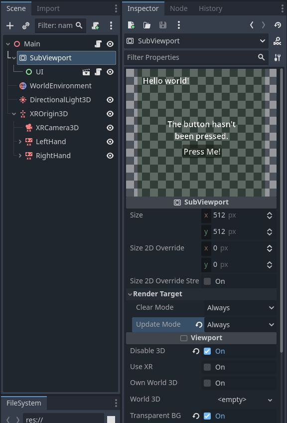
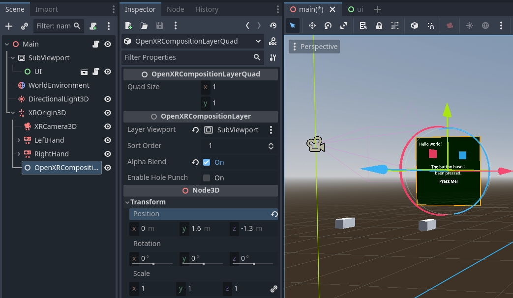

OpenXR composition layers
Introduction
In XR games you generally want to create user interactions that happen in 3D space and involve users touching objects as if they are touching them in real life.
Sometimes however creating a more traditional 2D interface is unavoidable. In XR however you can't just add 2D components to your scene. Godot needs depth information to properly position these elements so they appear at a comfortable place for the user. Even with depth information there are headsets with slanted displays that make it impossible for the standard 2D pipeline to correctly render the 2D elements.
The solution then is to render the UI to a SubViewport and display the result of this using a ViewportTexture on a 3D mesh. The QuadMesh is a suitable option for this.
Note
See the GUI in 3D example project for an example of this approach.
The problem with displaying the viewport in this way is that the rendered result is sampled for lens distortion by the XR runtime and the resulting quality loss can make UI text hard to read.
OpenXR offers a solution to this problem through composition layers. With composition layers it is possible for the contents of a viewport to be projected on a surface after lens distortion resulting in a much higher quality end result.
Note
As not all XR runtimes support all composition layer types, Godot implements a fallback solution where we render the viewport as part of the normal scene but with the aforementioned quality limitations.
Warning
When the composition layer is supported, it is the XR runtime that presents the subviewport. This means the UI is only visible in the headset, it will not be accessible by Godot and will thus not be shown when you have a spectator view on the desktop.
There are currently 3 nodes that expose this functionality:
OpenXRCompositionLayerCylinder shows the contents of the SubViewport on the inside of a cylinder (or "slice" of a cylinder).
OpenXRCompositionLayerEquirect shows the contents of the SubViewport on the interior of a sphere (or "slice" of a sphere).
OpenXRCompositionLayerQuad shows the contents of the SubViewport on a flat rectangle.
Setting up the SubViewport
The first step is adding a SubViewport for our 2D UI, this doesn't require any specific steps. For our example we do mark the viewport as transparent.
You can now create the 2D UI by adding child nodes to the SubViewport as you normally would. It is advisable to save the 2D UI in a subscene, this makes it easier to do your layout.

Warning
The update mode "When Visible" will not work as Godot can't determine whether the viewport is visible to the user. When assigning our viewport to a composition layer Godot will automatically adjust this.
Adding a composition layer
The second step is adding our composition layer. We can add the correct composition layer node as a child node of our XROrigin3D node. This is very important as the XR runtime positions everything in relation to our origin.
We want to position the composition layer so it is at eye height and roughly 1 to 1.5 meters away from the player.
We now assign the SubViewport to the Layer Viewport property and enable Alpha Blend.

Note
As the player can walk away from the origin point,
you will want to reposition the composition layer when the player recenters the view.
Using the reference space Local Floor will apply this logic automatically.
Making the interface work
So far we're only displaying our UI, to make it work we need to add some code. For this example we're going to keep things simple and make one of the controllers work as a pointer. We'll then simulate mouse actions with this pointer.
This code also requires a MeshInstance3D node called Pointer to be added
as a child to our OpenXRCompositionLayerQuad node.
We configure a SphereMesh with a radius 0.01 meters.
We'll be using this as a helper to visualize where the user is pointing.
The main function that drives this functionality is the intersects_ray
function on our composition layer node.
This function takes the global position and orientation of our pointer and returns
the UV where our ray intersects our viewport.
It returns Vector2(-1.0, -1.0) if we're not pointing at our viewport.
We start with setting up some variables, important here are the export variables which identify our controller node with which we point to our screen.
extends OpenXRCompositionLayerQuad
const NO_INTERSECTION = Vector2(-1.0, -1.0)
@export var controller : XRController3D
@export var button_action : String = "trigger_click"
var was_pressed : bool = false
var was_intersect : Vector2 = NO_INTERSECTION
...
Next we define a helper function that takes the value returned from intersects_ray
and gives us the global position for that intersection point.
This implementation only works for our OpenXRCompositionLayerQuad node.
...
func _intersect_to_global_pos(intersect : Vector2) -> Vector3:
if intersect != NO_INTERSECTION:
var local_pos : Vector2 = (intersect - Vector2(0.5, 0.5)) * quad_size
return global_transform * Vector3(local_pos.x, -local_pos.y, 0.0)
else:
return Vector3()
...
We also define a helper function that takes our intersect value and
returns our location in the viewport's local coordinate system:
...
func _intersect_to_viewport_pos(intersect : Vector2) -> Vector2i:
if layer_viewport and intersect != NO_INTERSECTION:
var pos : Vector2 = intersect * Vector2(layer_viewport.size)
return Vector2i(pos)
else:
return Vector2i(-1, -1)
...
The main logic happens in our _process function.
Here we start by hiding our pointer,
we then check if we have a valid controller and viewport,
and we call intersects_ray with the position and orientation of our controller:
...
# Called every frame. 'delta' is the elapsed time since the previous frame.
func _process(_delta):
# Hide our pointer, we'll make it visible if we're interacting with the viewport.
$Pointer.visible = false
if controller and layer_viewport:
var controller_t : Transform3D = controller.global_transform
var intersect : Vector2 = intersects_ray(controller_t.origin, -controller_t.basis.z)
...
Next we check if we're intersecting with our viewport. If so, we check if our button is pressed and place our pointer at our intersection point.
...
if intersect != NO_INTERSECTION:
var is_pressed : bool = controller.is_button_pressed(button_action)
# Place our pointer where we're pointing
var pos : Vector3 = _intersect_to_global_pos(intersect)
$Pointer.visible = true
$Pointer.global_position = pos
...
If we were intersecting in our previous process call and our pointer has moved, we prepare an InputEventMouseMotion object to simulate our mouse moving and send that to our viewport for further processing.
...
if was_intersect != NO_INTERSECTION and intersect != was_intersect:
# Pointer moved
var event : InputEventMouseMotion = InputEventMouseMotion.new()
var from : Vector2 = _intersect_to_viewport_pos(was_intersect)
var to : Vector2 = _intersect_to_viewport_pos(intersect)
if was_pressed:
event.button_mask = MOUSE_BUTTON_MASK_LEFT
event.relative = to - from
event.position = to
layer_viewport.push_input(event)
...
If we've just released our button we also prepare an InputEventMouseButton object to simulate a button release and send that to our viewport for further processing.
...
if not is_pressed and was_pressed:
# Button was let go?
var event : InputEventMouseButton = InputEventMouseButton.new()
event.button_index = 1
event.pressed = false
event.position = _intersect_to_viewport_pos(intersect)
layer_viewport.push_input(event)
...
Or if we've just pressed our button we prepare an InputEventMouseButton object to simulate a button press and send that to our viewport for further processing.
...
elif is_pressed and not was_pressed:
# Button was pressed?
var event : InputEventMouseButton = InputEventMouseButton.new()
event.button_index = 1
event.button_mask = MOUSE_BUTTON_MASK_LEFT
event.pressed = true
event.position = _intersect_to_viewport_pos(intersect)
layer_viewport.push_input(event)
...
Next we remember our state for next frame.
...
was_pressed = is_pressed
was_intersect = intersect
...
Finally, if we aren't intersecting, we clear our state.
...
else:
was_pressed = false
was_intersect = NO_INTERSECTION
Hole punching
As the composition layer is composited on top of the render result, it can be rendered in front of objects that are actually forward of the viewport.
By enabling hole punch you instruct Godot to render a transparent object where our viewport is displayed. It does this in a way that fills the depth buffer and clears the current rendering result. Anything behind our viewport will now be cleared, while anything in front of our viewport will be rendered as usual.
You also need to set Sort Order to a negative value,
the XR compositor will now draw the viewport first, and then overlay our rendering result.

Use case showing how the user's hand is incorrectly obscured by a composition layer when hole punching is not used.